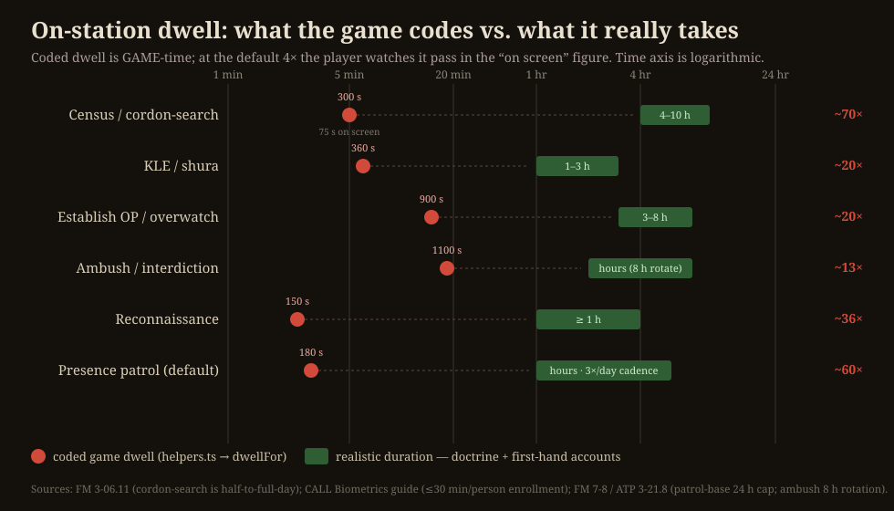
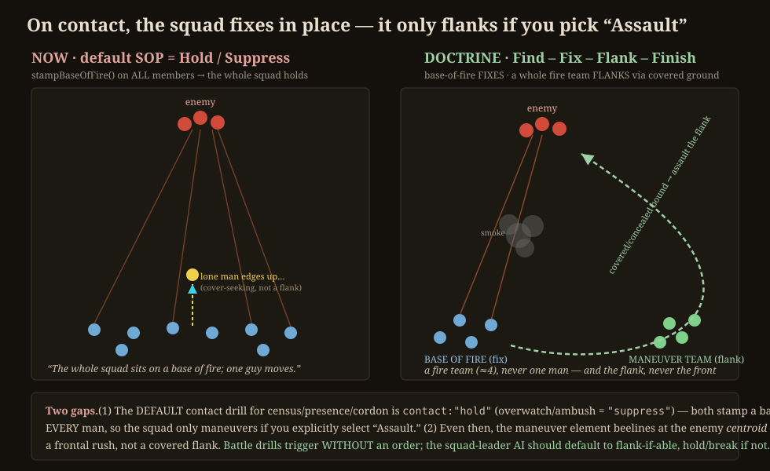
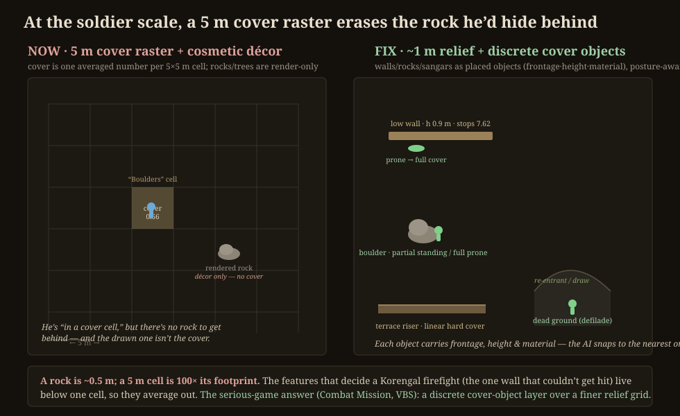
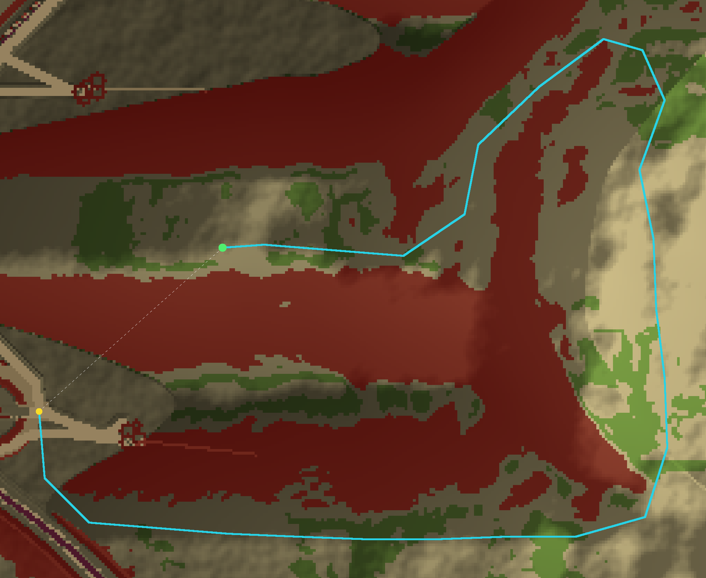
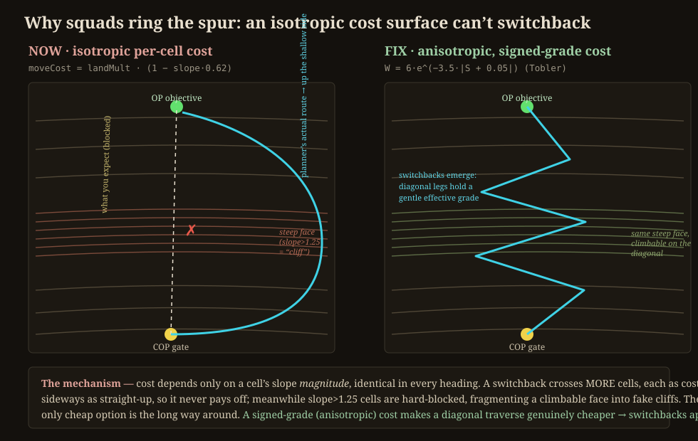

The owner flagged four complaints while watching the game at close zoom. Read together, they aren’t four bugs — they’re one story.
How this was verified. Three independent passes, kept separate so they could disagree: (1) a close read of the
engine with every mechanism quoted at its file:line; (2) purpose-built headless probes that turn each
complaint into a number on the real, deterministic sim; (3) doctrine research against the US Army field manuals and
first-hand Korengal accounts. Where the probe contradicted the hypothesis, the probe won — see item 2.
The mechanism. Every on-station hold reads one function, dwellFor() in
lib/sim/world/helpers.ts:30. It is a flat table of game-seconds:
| Activity | coded dwell | = game-min | on screen @4× | realistic |
|---|---|---|---|---|
| Census / cordon-search | 300 s | 5 | 75 s | 4–10 h |
| KLE / shura | 360 s | 6 | 90 s | 1–3 h (cumulative) |
| Establish OP / overwatch | 900 s | 15 | 225 s | 3–8 h (24 h cap) |
| Ambush | 1100 s | 18 | 275 s | hours (8 h rotate) |
| Recon | 150 s | 2.5 | 38 s | ≥ 1 h |
| Presence (default) | 180 s | 3 | 45 s | hours · 3×/day |
At the default 4× speed (state/store.ts:341; speeds are [1,2,4,8,16]) a 5-minute
census is gone in 75 real seconds; at 16× in ~19 s. Worse, the census effect is
instantaneous: the moment the squad is near the village, tasks.ts:443 flips
censusDone = true and calls advanceCensus() — the dwell that follows is a static wait, not
work being done.

What reality says. A cordon-and-search is a half-to-full-day operation built from a four-element task organisation (cordon / search / support / command), worked qalat-by-qalat — and biometric enrollment alone runs up to 30 minutes per person (CALL Commander’s Guide to Biometrics). A shura is 1–3 hours, but its real power is cumulative across a weekly cadence over months — one cup of tea changes nothing. An ambush is mostly patient hours of waiting (8-hour rotation), with contact measured in seconds. The classic disappointment to model is Restrepo’s “Cow Incident”: the long-awaited elder-initiated shura turned out to be a demand for compensation for a cow killed in the wire.
censusDone flips only after each compound is
worked / each person enrolled; an early recall yields a partial census.PendingEvent.helpers.ts:30, tasks.ts:443, store.ts:341.The mechanism. A squad’s on-contact behaviour is set by its SOP. The defaults
(types.ts:67) are contact:"hold" for census/presence/cordon and "suppress" for
overwatch/ambush — never "assault". Both hold and suppress route to
stampBaseOfFire() (squad-combat.ts:145), which puts every man on a base of fire. A
maneuver element is split off only in the assault path (assignElements,
squad-combat.ts:357) — so the squad flanks only if the player hand-picks “Assault.” And even then it
beelines at the threat centroid (orderTarget = threat, squad-combat.ts:178) — a frontal
rush, not a covered flank.

seekCover, ±18 m), not a maneuver element. Right: the doctrinal answer — a base-of-fire
team fixes while a whole fire team flanks along covered ground (Find–Fix–Flank–Finish).What the probe found — and where it corrected me. I drove squads into contact and sampled, every half-second,
how many men were maneuvering — at two tempos. The first surprise: the chosen SOP barely matters. Hold, Suppress,
and Assault produced nearly identical behaviour, because an automatic break-contact safety
(squad-combat.ts:72) overrides the SOP whenever the squad is overmatched. The squad has effectively
two modes — fix-in-place and run — and no offensive middle.
The squad stays holding 92% of contact time. While fixed, a mean of ~3 of 9 men move (median 2) — and those are individual cover-seeks and buddy-aid, not a maneuver element. The rest hold a base of fire. This is precisely “the whole squad sits, a couple shuffle.”
The break-safety fires: the squad spends ~60–77% of contact time breaking contact — most of the squad leapfrogging rearward (mean ~6 men moving at once). It runs; it doesn’t close.
So the owner’s “one man moving” is real — it lives in the light-contact regime, where stampBaseOfFire roots
everyone and only seekCover shuffles individuals. But the deeper finding is what’s missing from both
regimes, and from all three SOP settings: an autonomous flank assault. The squad either sits or runs. It never
fixes-with-one-team-and-maneuvers-with-the-other — the one thing a rifle squad is built to do.
What reality says. A rifle squad is built as two fire teams precisely so one suppresses while the other moves. The maneuver element is a whole fire team (~4 men), never a lone rifleman; it moves to a vulnerable flank via a covered route (often peeling back first, then swinging wide) and closes by 3–5-second buddy-team rushes as the base of fire shifts. A frontal rush at the centroid is doctrinally wrong. And crucially, battle drills trigger without an order — a squad that only ever holds until told to maneuver has failed the most basic infantry standard.
squadFight: react → assess fire
superiority → if achievable and a covered flank exists, assault via the flank; else hold/suppress; else break.
The player’s SOP becomes guidance/permission, not the on/off switch for maneuvering. (This is the design soul:
“combat is 100% AI; the hardest part of command is watching.”)findPath to the enemy’s flank.types.ts:67, squad-combat.ts:72,145,178,357. Probe:
tools/gen-combat-movers.ts.The mechanism. Cover and concealment are a single averaged number per 5 m cell
(COVER_CONCEAL, terrain.ts:2614; sampled by coverAt, :2480). The Land
enum already names the right features — TerraceWall, Boulders, DryWash,
CompoundWall — but only as 5×5 m blobs. Meanwhile the rocks and trees you see are, by their own
file’s admission, a “Pure render overlay (no sim impact)” (lib/render/decoration.ts:13): the drawn
rock is decoupled from the cover field, so a soldier can’t actually get behind that rock. A real rock is
~0.5 m; a 5 m cell is 100× its footprint — the features that decide a firefight are sub-cell and average out.

What reality says. Cover (stops bullets) and concealment (blocks sight) are different things, and “even the smallest depression or fold in the ground can give some cover” (FM 21-75). The Korengal was fought from terrace walls, sangars, rock outcrops, and the draws — at COP Restrepo the crew arranged their cots against the one wall “that couldn’t get hit.” Every serious wargame solves this the same way: model discrete cover objects, not a cover raster. Combat Mission uses walls and foxholes as objects with posture-dependent cover (a low wall is partial standing, full cover prone); VBS uses placed “biotopes” with round penetration. The elevation grid carries terrain form; cover lives in a separate object layer.
stance behaviour.seekCover/findCover
query objects, not just the raster), and render the object the engine actually uses — no more cosmetic
decoupling.terrain.ts:2480,2614,
decoration.ts:13.The mechanism, with a number. Foot-movement cost is isotropic:
moveCostAt = clamp(landMult · (1 − slope·0.62) …) (terrain.ts:2586) reads only the cell’s slope
magnitude — identical in every heading. So a switchback only adds distance and never pays off. And
slope > 1.25 (≈51°) is hard-impassable (terrain.ts:2581), while slope is a
forward-difference over 5 m — so procedural roughness scatters “cliff” cells across a climbable face, fragmenting it
into fake cliffs. The planner’s only cheap option is the long way around.
I rendered the planner’s actual output for an “Establish OP” order against the real generated terrain
(tools/gen-oproute.ts, seed korengal-2):

roadBias 0.55 and roadBias 0 routes are essentially
identical, so the detour is driven by the slope cutoff + isotropic cost, not road preference.| seed | climb | crow | route | detour | ascent impassable |
|---|---|---|---|---|---|
| korengal-2 | 353 m | 443 m | 3060 m | ×6.91 | 46% |
| ridgeline | 109 m | 570 m | 826 m | ×1.45 | 58% |
| restrepo | 308 m | 514 m | 631 m | ×1.23 | 41% |
| korengal (default) | 223 m | 477 m | 489 m | ×1.03 | 0% |
(The default korengal seed has only a gentle 223 m peak nearby — 0% blocked — so it barely shows the
problem. Pick a steep objective and the detour explodes.)

What reality says. Human walking speed and energy depend on the signed grade along the direction of
travel — Naismith’s rule, Tobler’s hiking function W = 6·e^(−3.5·|S+0.05|), Minetti’s metabolic
curve — so cost is intrinsically anisotropic. The GIS literature is explicit: an isotropic per-cell cost
mathematically cannot produce switchbacks (a diagonal traverse “buys nothing”), while an anisotropic cost makes the
diagonal cheaper and switchbacks emerge above a ~25% critical slope. Mountain doctrine (ATTP 3-21.50) ascends steep
ground by diagonal traverse / switchback and avoids the canalized road — the predictable, observed approach, exactly
where the Korengal ambushes were sprung. The game does the doctrinally-wrong thing (the road) for the wrong reason (a cost
model that can’t zigzag).
path.ts:309) — the single change that makes switchbacks emerge.terrain.ts:2581,2586,
path.ts:309,355, formation.ts:90. Probe: tools/gen-oproute.ts.Items 3 and 4 share the same cheapest fix, so they should be built on one foundation rather than as two unrelated efforts:
Raise the whole 512² valley to 1 m resolution. That’s 25× the cells (6.5 million), a memory and determinism budget blow-out, for detail you only need where soldiers actually are.
Keep the 5 m grid as the operational layer (strategic map, cross-valley routing). Instantiate a ~1 m tactical patch — discrete cover objects + anisotropic cost — only around active units. Build it once; items 3 and 4 both consume it.
Recommended sequence. (1) Item 1 first — small, no architecture, high felt-impact. (2)
Item 2 — AI-only, the squad-leader maneuver gate. (3) The two-tier terrain foundation. (4) Items 3
and 4 on top of it. Hold items 3 and 4 until the in-flight scale campaign lands — they depend on the final cell size and
elevation field. Full task breakdown, with per-workstream Definitions-of-Done and verification harnesses, is in
PLAN-soldier-scale-realism.md.
Reproduce. tools/gen-oproute.ts <seed> (item 4 detour render + metrics) ·
tools/gen-combat-movers.ts <seeds> <min> <heat> (item 2 maneuver counts) ·
tools/svgrender.mjs <in.svg> <out.png> (diagrams). Worst item-4 seeds: korengal-2,
ridgeline, restrepo.
In the Mountains · soldier-scale realism research · 2026-06-07 · research only, no code changed.